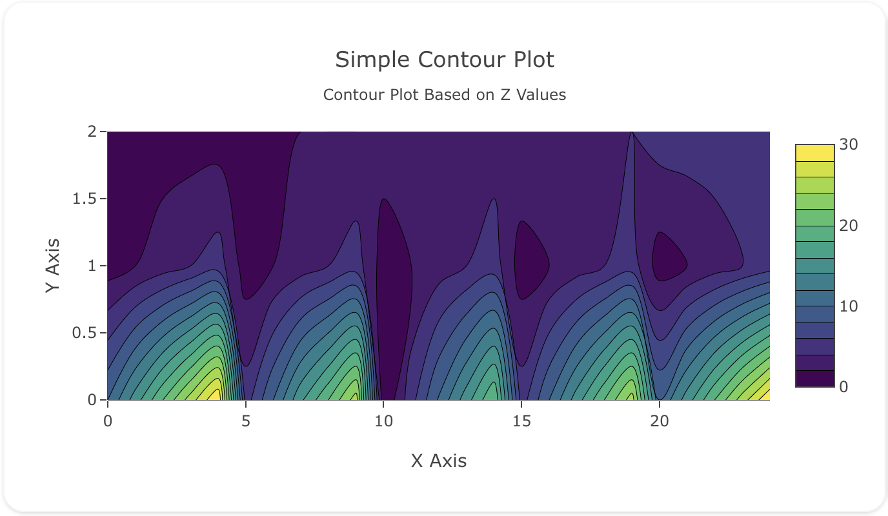
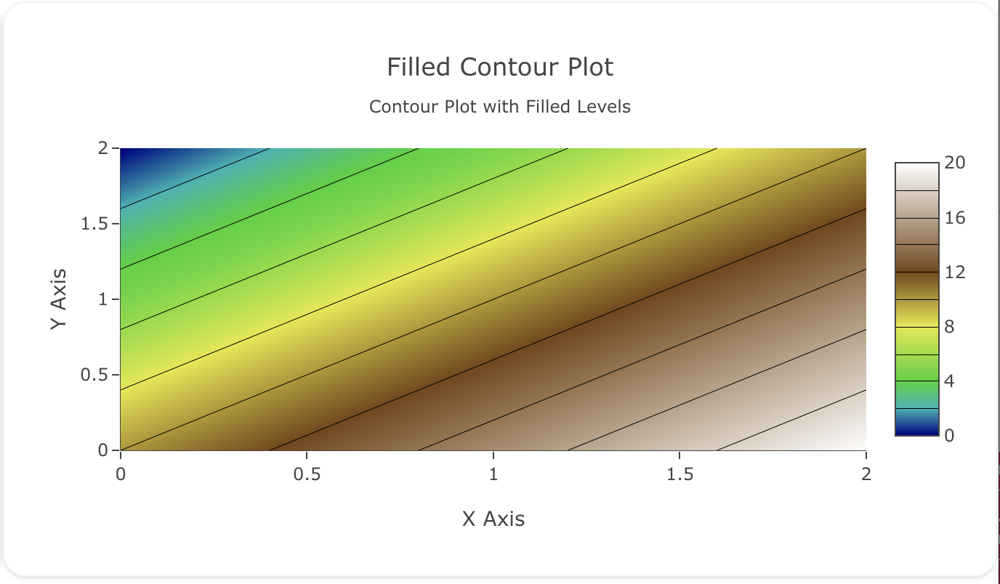
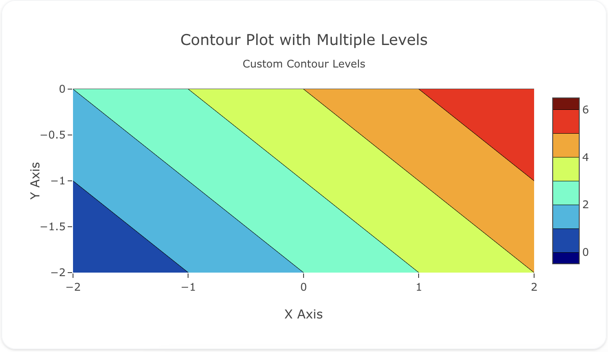

Contour
Overview
The contour insight type is used to create contour plots, which display three-dimensional data in a two-dimensional format. Contour plots are particularly useful for representing surfaces such as elevation, temperature, pressure, or intensity distributions.
They use a grid of Z values (with optional X and Y coordinates) to generate continuous contour lines or filled regions, allowing you to easily visualize gradients and variations across a surface.
Common Uses
- Topographic Maps: Visualizing elevation across a landscape.
- Heat/Temperature Maps: Showing temperature gradients over an area.
- Electromagnetic Fields: Representing varying field strengths.
- Pressure Maps: Displaying pressure levels in meteorology.
See the Attributes for the full list of configuration options.
Examples
Common Configurations
A basic contour insight using X, Y, and Z values:

insights:
- name: Simple Contour Insight
description: "Basic contour plot using X, Y, Z"
props:
type: contour
x: ?{${ref(contour-data).x}}
y: ?{${ref(contour-data).y}}
z: ?{${ref(contour-data).z}}
colorscale: "Viridis"
ncontours: 20
layout:
title:
text: Simple Contour Plot<br><sub>Based on Z Values</sub>
xaxis:
title: "X Axis"
yaxis:
title: "Y Axis"
Adds filled color regions between contour lines for better gradient visualization:

insights:
- name: Filled Contour Insight
description: "Contour plot with heatmap coloring"
props:
type: contour
x: ?{${ref(contour-data-filled).x}}
y: ?{${ref(contour-data-filled).y}}
z: ?{${ref(contour-data-filled).z}}
colorscale: "Earth"
contours:
coloring: "heatmap"
showlines: true
ncontours: 25
layout:
title:
text: Filled Contour Plot<br><sub>Shaded Levels</sub>
xaxis:
title: "X Axis"
yaxis:
title: "Y Axis"
Demonstrates manual control over contour ranges and intervals:

insights:
- name: Multi-Level Contour Insight
description: "Contour plot with custom contour levels"
props:
type: contour
x: ?{${ref(contour-data-multi).x}}
y: ?{${ref(contour-data-multi).y}}
z: ?{${ref(contour-data-multi).z}}
colorscale: "Jet"
contours:
start: 0
end: 12
size: 0.5
ncontours: 24
layout:
title:
text: Contour Plot with Custom Levels
xaxis:
title: "X Axis"
yaxis:
title: "Y Axis"
A schema to validate plotly trace properties
Attributes
These attributes apply to insights where insight.props.type is set to contour. You would configure these attributes on the insight with the insight.props object.
autocolorscale: 'boolean' #(1)!
autocontour: 'boolean' #(2)!
coloraxis: 'string' #(3)!
colorbar:
bgcolor: 'any' #(4)!
bordercolor: 'any' #(5)!
borderwidth: 'number' #(6)!
exponentformat: 'any' #(7)!
len: 'number' #(8)!
lenmode: 'any' #(9)!
minexponent: 'number' #(10)!
nticks: 'integer' #(11)!
orientation: 'any' #(12)!
outlinecolor: 'any' #(13)!
outlinewidth: 'number' #(14)!
separatethousands: 'boolean' #(15)!
showexponent: 'any' #(16)!
showticklabels: 'boolean' #(17)!
showtickprefix: 'any' #(18)!
showticksuffix: 'any' #(19)!
thickness: 'number' #(20)!
thicknessmode: 'any' #(21)!
tickangle: 'number' #(22)!
tickcolor: 'any' #(23)!
tickfont:
color: any
family: 'string' #(24)!
lineposition: 'string' #(25)!
shadow: 'string' #(26)!
size: number
style: 'any' #(27)!
textcase: 'any' #(28)!
variant: 'any' #(29)!
weight: 'integer' #(30)!
tickformat: 'string' #(31)!
tickformatstops: array
ticklabeloverflow: 'any' #(32)!
ticklabelposition: 'any' #(33)!
ticklabelstep: 'integer' #(34)!
ticklen: 'number' #(35)!
tickmode: 'any' #(36)!
tickprefix: 'string' #(37)!
ticks: 'any' #(38)!
ticksuffix: 'string' #(39)!
ticktext: 'number | array' #(40)!
ticktextsrc: 'string' #(41)!
tickvals: 'number | array' #(42)!
tickvalssrc: 'string' #(43)!
tickwidth: 'number' #(44)!
title:
font:
color: any
family: 'string' #(45)!
lineposition: 'string' #(46)!
shadow: 'string' #(47)!
size: number
style: 'any' #(48)!
textcase: 'any' #(49)!
variant: 'any' #(50)!
weight: 'integer' #(51)!
side: 'any' #(52)!
text: 'string' #(53)!
x: 'number' #(54)!
xanchor: 'any' #(55)!
xpad: 'number' #(56)!
xref: 'any' #(57)!
y: 'number' #(58)!
yanchor: 'any' #(59)!
ypad: 'number' #(60)!
yref: 'any' #(61)!
colorscale: 'any' #(62)!
connectgaps: 'boolean' #(63)!
contours:
coloring: 'any' #(64)!
end: 'number' #(65)!
impliedEdits: any
labelfont:
color: any
family: 'string' #(66)!
lineposition: 'string' #(67)!
shadow: 'string' #(68)!
size: number
style: 'any' #(69)!
textcase: 'any' #(70)!
variant: 'any' #(71)!
weight: 'integer' #(72)!
labelformat: 'string' #(73)!
operation: 'any' #(74)!
showlabels: 'boolean' #(75)!
showlines: 'boolean' #(76)!
size: 'number' #(77)!
start: 'number' #(78)!
type: 'any' #(79)!
customdata: 'number | array' #(80)!
customdatasrc: 'string' #(81)!
dx: 'number' #(82)!
dy: 'number' #(83)!
fillcolor: 'any' #(84)!
hoverinfo: 'array' #(85)!
hoverinfosrc: 'string' #(86)!
hoverlabel:
align: 'array' #(87)!
alignsrc: 'string' #(88)!
bgcolor: 'color | array' #(89)!
bgcolorsrc: 'string' #(90)!
bordercolor: 'color | array' #(91)!
bordercolorsrc: 'string' #(92)!
font:
color: color | array
colorsrc: 'string' #(93)!
family: 'string | array' #(94)!
familysrc: 'string' #(95)!
lineposition: 'array' #(96)!
linepositionsrc: 'string' #(97)!
shadow: 'string | array' #(98)!
shadowsrc: 'string' #(99)!
size: number | array
sizesrc: 'string' #(100)!
style: 'array' #(101)!
stylesrc: 'string' #(102)!
textcase: 'array' #(103)!
textcasesrc: 'string' #(104)!
variant: 'array' #(105)!
variantsrc: 'string' #(106)!
weight: 'integer | array' #(107)!
weightsrc: 'string' #(108)!
namelength: 'integer | array' #(109)!
namelengthsrc: 'string' #(110)!
hoverongaps: 'boolean' #(111)!
hovertemplate: 'string | array' #(112)!
hovertemplatesrc: 'string' #(113)!
hovertext: 'number | array' #(114)!
hovertextsrc: 'string' #(115)!
ids: 'number | array' #(116)!
idssrc: 'string' #(117)!
legend: 'string' #(118)!
legendgroup: 'string' #(119)!
legendgrouptitle:
font:
color: any
family: 'string' #(120)!
lineposition: 'string' #(121)!
shadow: 'string' #(122)!
size: number
style: 'any' #(123)!
textcase: 'any' #(124)!
variant: 'any' #(125)!
weight: 'integer' #(126)!
text: 'string' #(127)!
legendrank: 'number' #(128)!
legendwidth: 'number' #(129)!
line:
color: 'any' #(130)!
dash: 'string' #(131)!
smoothing: 'number' #(132)!
width: 'number' #(133)!
metasrc: 'string' #(134)!
name: 'string' #(135)!
ncontours: 'integer' #(136)!
opacity: 'number' #(137)!
reversescale: 'boolean' #(138)!
showlegend: 'boolean' #(139)!
showscale: 'boolean' #(140)!
stream:
maxpoints: 'number' #(141)!
token: 'string' #(142)!
text: 'number | array' #(143)!
textfont:
color: any
family: 'string' #(144)!
lineposition: 'string' #(145)!
shadow: 'string' #(146)!
size: number
style: 'any' #(147)!
textcase: 'any' #(148)!
variant: 'any' #(149)!
weight: 'integer' #(150)!
textsrc: 'string' #(151)!
texttemplate: 'string' #(152)!
transpose: 'boolean' #(153)!
type: contour
uid: 'string' #(154)!
visible: 'any' #(155)!
x: 'number | array' #(156)!
xaxis: 'string' #(157)!
xcalendar: 'any' #(158)!
xhoverformat: 'string' #(159)!
xperiodalignment: 'any' #(160)!
xsrc: 'string' #(161)!
xtype: 'any' #(162)!
y: 'number | array' #(163)!
yaxis: 'string' #(164)!
ycalendar: 'any' #(165)!
yhoverformat: 'string' #(166)!
yperiodalignment: 'any' #(167)!
ysrc: 'string' #(168)!
ytype: 'any' #(169)!
z: 'number | array' #(170)!
zauto: 'boolean' #(171)!
zhoverformat: 'string' #(172)!
zmax: 'number' #(173)!
zmid: 'number' #(174)!
zmin: 'number' #(175)!
zorder: 'integer' #(176)!
zsrc: 'string' #(177)!
- Determines whether the colorscale is a default palette (
autocolorscale: true) or the palette determined bycolorscale. In casecolorscaleis unspecified orautocolorscaleis true, the default palette will be chosen according to whether numbers in thecolorarray are all positive, all negative or mixed. - Determines whether or not the contour level attributes are picked by an algorithm. If true, the number of contour levels can be set in
ncontours. If false, set the contour level attributes incontours. - Sets a reference to a shared color axis. References to these shared color axes are coloraxis, coloraxis2, coloraxis3, etc. Settings for these shared color axes are set in the layout, under
layout.coloraxis,layout.coloraxis2, etc. Note that multiple color scales can be linked to the same color axis. - Sets the color of padded area.
- Sets the axis line color.
- Sets the width (in px) or the border enclosing this color bar.
- Determines a formatting rule for the tick exponents. For example, consider the number 1,000,000,000. If none, it appears as 1,000,000,000. If e, 1e+9. If E, 1E+9. If power, 1x10^9 (with 9 in a super script). If SI, 1G. If B, 1B.
- Sets the length of the color bar This measure excludes the padding of both ends. That is, the color bar length is this length minus the padding on both ends.
- Determines whether this color bar's length (i.e. the measure in the color variation direction) is set in units of plot fraction or in *pixels. Use
lento set the value. - Hide SI prefix for 10^n if |n| is below this number. This only has an effect when
tickformatis SI or B. - Specifies the maximum number of ticks for the particular axis. The actual number of ticks will be chosen automatically to be less than or equal to
nticks. Has an effect only iftickmodeis set to auto. - Sets the orientation of the colorbar.
- Sets the axis line color.
- Sets the width (in px) of the axis line.
- If "true", even 4-digit integers are separated
- If all, all exponents are shown besides their significands. If first, only the exponent of the first tick is shown. If last, only the exponent of the last tick is shown. If none, no exponents appear.
- Determines whether or not the tick labels are drawn.
- If all, all tick labels are displayed with a prefix. If first, only the first tick is displayed with a prefix. If last, only the last tick is displayed with a suffix. If none, tick prefixes are hidden.
- Same as
showtickprefixbut for tick suffixes. - Sets the thickness of the color bar This measure excludes the size of the padding, ticks and labels.
- Determines whether this color bar's thickness (i.e. the measure in the constant color direction) is set in units of plot fraction or in pixels. Use
thicknessto set the value. - Sets the angle of the tick labels with respect to the horizontal. For example, a
tickangleof -90 draws the tick labels vertically. - Sets the tick color.
- HTML font family - the typeface that will be applied by the web browser. The web browser can only apply a font if it is available on the system where it runs. Provide multiple font families, separated by commas, to indicate the order in which to apply fonts if they aren't available.
- Sets the kind of decoration line(s) with text, such as an under, over or through as well as combinations e.g. under+over, etc.
- Sets the shape and color of the shadow behind text. auto places minimal shadow and applies contrast text font color. See https://developer.mozilla.org/en-US/docs/Web/CSS/text-shadow for additional options.
- Sets whether a font should be styled with a normal or italic face from its family.
- Sets capitalization of text. It can be used to make text appear in all-uppercase or all-lowercase, or with each word capitalized.
- Sets the variant of the font.
- Sets the weight (or boldness) of the font.
- Sets the tick label formatting rule using d3 formatting mini-languages which are very similar to those in Python. For numbers, see: https://github.com/d3/d3-format/tree/v1.4.5#d3-format. And for dates see: https://github.com/d3/d3-time-format/tree/v2.2.3#locale_format. We add two items to d3's date formatter: %h for half of the year as a decimal number as well as %{n}f for fractional seconds with n digits. For example, 2016-10-13 09:15:23.456 with tickformat %H~%M~%S.%2f would display 09~15~23.46
- Determines how we handle tick labels that would overflow either the graph div or the domain of the axis. The default value for inside tick labels is hide past domain. In other cases the default is hide past div.
- Determines where tick labels are drawn relative to the ticks. Left and right options are used when
orientationis h, top and bottom whenorientationis v. - Sets the spacing between tick labels as compared to the spacing between ticks. A value of 1 (default) means each tick gets a label. A value of 2 means shows every 2nd label. A larger value n means only every nth tick is labeled.
tick0determines which labels are shown. Not implemented for axes withtypelog or multicategory, or whentickmodeis array. - Sets the tick length (in px).
- Sets the tick mode for this axis. If auto, the number of ticks is set via
nticks. If linear, the placement of the ticks is determined by a starting positiontick0and a tick stepdtick(linear is the default value iftick0anddtickare provided). If array, the placement of the ticks is set viatickvalsand the tick text isticktext. (array is the default value iftickvalsis provided). - Sets a tick label prefix.
- Determines whether ticks are drawn or not. If , this axis' ticks are not drawn. If outside (inside), this axis' are drawn outside (inside) the axis lines.
- Sets a tick label suffix.
- Sets the text displayed at the ticks position via
tickvals. Only has an effect iftickmodeis set to array. Used withtickvals. - Sets the source reference on Chart Studio Cloud for
ticktext. - Sets the values at which ticks on this axis appear. Only has an effect if
tickmodeis set to array. Used withticktext. - Sets the source reference on Chart Studio Cloud for
tickvals. - Sets the tick width (in px).
- HTML font family - the typeface that will be applied by the web browser. The web browser can only apply a font if it is available on the system where it runs. Provide multiple font families, separated by commas, to indicate the order in which to apply fonts if they aren't available.
- Sets the kind of decoration line(s) with text, such as an under, over or through as well as combinations e.g. under+over, etc.
- Sets the shape and color of the shadow behind text. auto places minimal shadow and applies contrast text font color. See https://developer.mozilla.org/en-US/docs/Web/CSS/text-shadow for additional options.
- Sets whether a font should be styled with a normal or italic face from its family.
- Sets capitalization of text. It can be used to make text appear in all-uppercase or all-lowercase, or with each word capitalized.
- Sets the variant of the font.
- Sets the weight (or boldness) of the font.
- Determines the location of color bar's title with respect to the color bar. Defaults to top when
orientationif v and defaults to right whenorientationif h. - Sets the title of the color bar.
- Sets the x position with respect to
xrefof the color bar (in plot fraction). Whenxrefis paper, defaults to 1.02 whenorientationis v and 0.5 whenorientationis h. Whenxrefis container, defaults to 1 whenorientationis v and 0.5 whenorientationis h. Must be between 0 and 1 ifxrefis container and between -2 and 3 ifxrefis paper. - Sets this color bar's horizontal position anchor. This anchor binds the
xposition to the left, center or right of the color bar. Defaults to left whenorientationis v and center whenorientationis h. - Sets the amount of padding (in px) along the x direction.
- Sets the container
xrefers to. container spans the entirewidthof the plot. paper refers to the width of the plotting area only. - Sets the y position with respect to
yrefof the color bar (in plot fraction). Whenyrefis paper, defaults to 0.5 whenorientationis v and 1.02 whenorientationis h. Whenyrefis container, defaults to 0.5 whenorientationis v and 1 whenorientationis h. Must be between 0 and 1 ifyrefis container and between -2 and 3 ifyrefis paper. - Sets this color bar's vertical position anchor This anchor binds the
yposition to the top, middle or bottom of the color bar. Defaults to middle whenorientationis v and bottom whenorientationis h. - Sets the amount of padding (in px) along the y direction.
- Sets the container
yrefers to. container spans the entireheightof the plot. paper refers to the height of the plotting area only. - Sets the colorscale. The colorscale must be an array containing arrays mapping a normalized value to an rgb, rgba, hex, hsl, hsv, or named color string. At minimum, a mapping for the lowest (0) and highest (1) values are required. For example,
[[0, 'rgb(0,0,255)'], [1, 'rgb(255,0,0)']]. To control the bounds of the colorscale in color space, usezminandzmax. Alternatively,colorscalemay be a palette name string of the following list: Blackbody,Bluered,Blues,Cividis,Earth,Electric,Greens,Greys,Hot,Jet,Picnic,Portland,Rainbow,RdBu,Reds,Viridis,YlGnBu,YlOrRd. - Determines whether or not gaps (i.e. {nan} or missing values) in the
zdata are filled in. It is defaulted to true ifzis a one dimensional array otherwise it is defaulted to false. - Determines the coloring method showing the contour values. If fill, coloring is done evenly between each contour level If heatmap, a heatmap gradient coloring is applied between each contour level. If lines, coloring is done on the contour lines. If none, no coloring is applied on this trace.
- Sets the end contour level value. Must be more than
contours.start - HTML font family - the typeface that will be applied by the web browser. The web browser can only apply a font if it is available on the system where it runs. Provide multiple font families, separated by commas, to indicate the order in which to apply fonts if they aren't available.
- Sets the kind of decoration line(s) with text, such as an under, over or through as well as combinations e.g. under+over, etc.
- Sets the shape and color of the shadow behind text. auto places minimal shadow and applies contrast text font color. See https://developer.mozilla.org/en-US/docs/Web/CSS/text-shadow for additional options.
- Sets whether a font should be styled with a normal or italic face from its family.
- Sets capitalization of text. It can be used to make text appear in all-uppercase or all-lowercase, or with each word capitalized.
- Sets the variant of the font.
- Sets the weight (or boldness) of the font.
- Sets the contour label formatting rule using d3 formatting mini-languages which are very similar to those in Python. For numbers, see: https://github.com/d3/d3-format/tree/v1.4.5#d3-format.
- Sets the constraint operation.
=keeps regions equal tovalue.<and<=keep regions less thanvalue.>and>=keep regions greater thanvalue.[],(),[), and(]keep regions insidevalue[0]andvalue[1].][,)(,](, and)[keep regions outsidevalue[0]andvalue[1]. Open vs. closed intervals make no difference to constraint display, but all versions are allowed for consistency with filter transforms. - Determines whether to label the contour lines with their values.
- Determines whether or not the contour lines are drawn. Has an effect only if
contours.coloringis set to fill. - Sets the step between each contour level. Must be positive.
- Sets the starting contour level value. Must be less than
contours.end - If
levels, the data is represented as a contour plot with multiple levels displayed. Ifconstraint, the data is represented as constraints with the invalid region shaded as specified by theoperationandvalueparameters. - Assigns extra data each datum. This may be useful when listening to hover, click and selection events. Note that, scatter traces also appends customdata items in the markers DOM elements
- Sets the source reference on Chart Studio Cloud for
customdata. - Sets the x coordinate step. See
x0for more info. - Sets the y coordinate step. See
y0for more info. - Sets the fill color if
contours.typeis constraint. Defaults to a half-transparent variant of the line color, marker color, or marker line color, whichever is available. - Determines which trace information appear on hover. If
noneorskipare set, no information is displayed upon hovering. But, ifnoneis set, click and hover events are still fired. - Sets the source reference on Chart Studio Cloud for
hoverinfo. - Sets the horizontal alignment of the text content within hover label box. Has an effect only if the hover label text spans more two or more lines
- Sets the source reference on Chart Studio Cloud for
align. - Sets the background color of the hover labels for this trace
- Sets the source reference on Chart Studio Cloud for
bgcolor. - Sets the border color of the hover labels for this trace.
- Sets the source reference on Chart Studio Cloud for
bordercolor. - Sets the source reference on Chart Studio Cloud for
color. - HTML font family - the typeface that will be applied by the web browser. The web browser can only apply a font if it is available on the system where it runs. Provide multiple font families, separated by commas, to indicate the order in which to apply fonts if they aren't available.
- Sets the source reference on Chart Studio Cloud for
family. - Sets the kind of decoration line(s) with text, such as an under, over or through as well as combinations e.g. under+over, etc.
- Sets the source reference on Chart Studio Cloud for
lineposition. - Sets the shape and color of the shadow behind text. auto places minimal shadow and applies contrast text font color. See https://developer.mozilla.org/en-US/docs/Web/CSS/text-shadow for additional options.
- Sets the source reference on Chart Studio Cloud for
shadow. - Sets the source reference on Chart Studio Cloud for
size. - Sets whether a font should be styled with a normal or italic face from its family.
- Sets the source reference on Chart Studio Cloud for
style. - Sets capitalization of text. It can be used to make text appear in all-uppercase or all-lowercase, or with each word capitalized.
- Sets the source reference on Chart Studio Cloud for
textcase. - Sets the variant of the font.
- Sets the source reference on Chart Studio Cloud for
variant. - Sets the weight (or boldness) of the font.
- Sets the source reference on Chart Studio Cloud for
weight. - Sets the default length (in number of characters) of the trace name in the hover labels for all traces. -1 shows the whole name regardless of length. 0-3 shows the first 0-3 characters, and an integer >3 will show the whole name if it is less than that many characters, but if it is longer, will truncate to
namelength - 3characters and add an ellipsis. - Sets the source reference on Chart Studio Cloud for
namelength. - Determines whether or not gaps (i.e. {nan} or missing values) in the
zdata have hover labels associated with them. - Template string used for rendering the information that appear on hover box. Note that this will override
hoverinfo. Variables are inserted using %{variable}, for example "y: %{y}" as well as %{xother}, {%xother}, {%_xother}, {%xother_}. When showing info for several points, xother will be added to those with different x positions from the first point. An underscore before or after (x|y)other will add a space on that side, only when this field is shown. Numbers are formatted using d3-format's syntax %{variable:d3-format}, for example "Price: %{y:$.2f}". https://github.com/d3/d3-format/tree/v1.4.5#d3-format for details on the formatting syntax. Dates are formatted using d3-time-format's syntax %{variable|d3-time-format}, for example "Day: %{2019-01-01|%A}". https://github.com/d3/d3-time-format/tree/v2.2.3#locale_format for details on the date formatting syntax. The variables available inhovertemplateare the ones emitted as event data described at this link https://plotly.com/javascript/plotlyjs-events/#event-data. Additionally, every attributes that can be specified per-point (the ones that arearrayOk: true) are available. Anything contained in tag<extra>is displayed in the secondary box, for example "{fullData.name} ". To hide the secondary box completely, use an empty tag<extra></extra>. - Sets the source reference on Chart Studio Cloud for
hovertemplate. - Same as
text. - Sets the source reference on Chart Studio Cloud for
hovertext. - Assigns id labels to each datum. These ids for object constancy of data points during animation. Should be an array of strings, not numbers or any other type.
- Sets the source reference on Chart Studio Cloud for
ids. - Sets the reference to a legend to show this trace in. References to these legends are legend, legend2, legend3, etc. Settings for these legends are set in the layout, under
layout.legend,layout.legend2, etc. - Sets the legend group for this trace. Traces and shapes part of the same legend group hide/show at the same time when toggling legend items.
- HTML font family - the typeface that will be applied by the web browser. The web browser can only apply a font if it is available on the system where it runs. Provide multiple font families, separated by commas, to indicate the order in which to apply fonts if they aren't available.
- Sets the kind of decoration line(s) with text, such as an under, over or through as well as combinations e.g. under+over, etc.
- Sets the shape and color of the shadow behind text. auto places minimal shadow and applies contrast text font color. See https://developer.mozilla.org/en-US/docs/Web/CSS/text-shadow for additional options.
- Sets whether a font should be styled with a normal or italic face from its family.
- Sets capitalization of text. It can be used to make text appear in all-uppercase or all-lowercase, or with each word capitalized.
- Sets the variant of the font.
- Sets the weight (or boldness) of the font.
- Sets the title of the legend group.
- Sets the legend rank for this trace. Items and groups with smaller ranks are presented on top/left side while with reversed
legend.traceorderthey are on bottom/right side. The default legendrank is 1000, so that you can use ranks less than 1000 to place certain items before all unranked items, and ranks greater than 1000 to go after all unranked items. When having unranked or equal rank items shapes would be displayed after traces i.e. according to their order in data and layout. - Sets the width (in px or fraction) of the legend for this trace.
- Sets the color of the contour level. Has no effect if
contours.coloringis set to lines. - Sets the dash style of lines. Set to a dash type string (solid, dot, dash, longdash, dashdot, or longdashdot) or a dash length list in px (eg 5px,10px,2px,2px).
- Sets the amount of smoothing for the contour lines, where 0 corresponds to no smoothing.
- Sets the contour line width in (in px) Defaults to 0.5 when
contours.typeis levels. Defaults to 2 whencontour.typeis constraint. - Sets the source reference on Chart Studio Cloud for
meta. - Sets the trace name. The trace name appears as the legend item and on hover.
- Sets the maximum number of contour levels. The actual number of contours will be chosen automatically to be less than or equal to the value of
ncontours. Has an effect only ifautocontouris true or ifcontours.sizeis missing. - Sets the opacity of the trace.
- Reverses the color mapping if true. If true,
zminwill correspond to the last color in the array andzmaxwill correspond to the first color. - Determines whether or not an item corresponding to this trace is shown in the legend.
- Determines whether or not a colorbar is displayed for this trace.
- Sets the maximum number of points to keep on the plots from an incoming stream. If
maxpointsis set to 50, only the newest 50 points will be displayed on the plot. - The stream id number links a data trace on a plot with a stream. See https://chart-studio.plotly.com/settings for more details.
- Sets the text elements associated with each z value.
- HTML font family - the typeface that will be applied by the web browser. The web browser can only apply a font if it is available on the system where it runs. Provide multiple font families, separated by commas, to indicate the order in which to apply fonts if they aren't available.
- Sets the kind of decoration line(s) with text, such as an under, over or through as well as combinations e.g. under+over, etc.
- Sets the shape and color of the shadow behind text. auto places minimal shadow and applies contrast text font color. See https://developer.mozilla.org/en-US/docs/Web/CSS/text-shadow for additional options.
- Sets whether a font should be styled with a normal or italic face from its family.
- Sets capitalization of text. It can be used to make text appear in all-uppercase or all-lowercase, or with each word capitalized.
- Sets the variant of the font.
- Sets the weight (or boldness) of the font.
- Sets the source reference on Chart Studio Cloud for
text. - For this trace it only has an effect if
coloringis set to heatmap. Template string used for rendering the information text that appear on points. Note that this will overridetextinfo. Variables are inserted using %{variable}, for example "y: %{y}". Numbers are formatted using d3-format's syntax %{variable:d3-format}, for example "Price: %{y:$.2f}". https://github.com/d3/d3-format/tree/v1.4.5#d3-format for details on the formatting syntax. Dates are formatted using d3-time-format's syntax %{variable|d3-time-format}, for example "Day: %{2019-01-01|%A}". https://github.com/d3/d3-time-format/tree/v2.2.3#locale_format for details on the date formatting syntax. Every attributes that can be specified per-point (the ones that arearrayOk: true) are available. Finally, the template string has access to variablesx,y,zandtext. - Transposes the z data.
- Assign an id to this trace, Use this to provide object constancy between traces during animations and transitions.
- Determines whether or not this trace is visible. If legendonly, the trace is not drawn, but can appear as a legend item (provided that the legend itself is visible).
- Sets the x coordinates.
- Sets a reference between this trace's x coordinates and a 2D cartesian x axis. If x (the default value), the x coordinates refer to
layout.xaxis. If x2, the x coordinates refer tolayout.xaxis2, and so on. - Sets the calendar system to use with
xdate data. - Sets the hover text formatting rulefor
xusing d3 formatting mini-languages which are very similar to those in Python. For numbers, see: https://github.com/d3/d3-format/tree/v1.4.5#d3-format. And for dates see: https://github.com/d3/d3-time-format/tree/v2.2.3#locale_format. We add two items to d3's date formatter: %h for half of the year as a decimal number as well as %{n}f for fractional seconds with n digits. For example, 2016-10-13 09:15:23.456 with tickformat %H~%M~%S.%2f would display 09~15~23.46By default the values are formatted usingxaxis.hoverformat. - Only relevant when the axis
typeis date. Sets the alignment of data points on the x axis. - Sets the source reference on Chart Studio Cloud for
x. - If array, the heatmap's x coordinates are given by x (the default behavior when
xis provided). If scaled, the heatmap's x coordinates are given by x0 and dx (the default behavior whenxis not provided). - Sets the y coordinates.
- Sets a reference between this trace's y coordinates and a 2D cartesian y axis. If y (the default value), the y coordinates refer to
layout.yaxis. If y2, the y coordinates refer tolayout.yaxis2, and so on. - Sets the calendar system to use with
ydate data. - Sets the hover text formatting rulefor
yusing d3 formatting mini-languages which are very similar to those in Python. For numbers, see: https://github.com/d3/d3-format/tree/v1.4.5#d3-format. And for dates see: https://github.com/d3/d3-time-format/tree/v2.2.3#locale_format. We add two items to d3's date formatter: %h for half of the year as a decimal number as well as %{n}f for fractional seconds with n digits. For example, 2016-10-13 09:15:23.456 with tickformat %H~%M~%S.%2f would display 09~15~23.46By default the values are formatted usingyaxis.hoverformat. - Only relevant when the axis
typeis date. Sets the alignment of data points on the y axis. - Sets the source reference on Chart Studio Cloud for
y. - If array, the heatmap's y coordinates are given by y (the default behavior when
yis provided) If scaled, the heatmap's y coordinates are given by y0 and dy (the default behavior whenyis not provided) - Sets the z data.
- Determines whether or not the color domain is computed with respect to the input data (here in
z) or the bounds set inzminandzmaxDefaults tofalsewhenzminandzmaxare set by the user. - Sets the hover text formatting rulefor
zusing d3 formatting mini-languages which are very similar to those in Python. For numbers, see: https://github.com/d3/d3-format/tree/v1.4.5#d3-format.By default the values are formatted using generic number format. - Sets the upper bound of the color domain. Value should have the same units as in
zand if set,zminmust be set as well. - Sets the mid-point of the color domain by scaling
zminand/orzmaxto be equidistant to this point. Value should have the same units as inz. Has no effect whenzautoisfalse. - Sets the lower bound of the color domain. Value should have the same units as in
zand if set,zmaxmust be set as well. - Sets the layer on which this trace is displayed, relative to other SVG traces on the same subplot. SVG traces with higher
zorderappear in front of those with lowerzorder. - Sets the source reference on Chart Studio Cloud for
z.